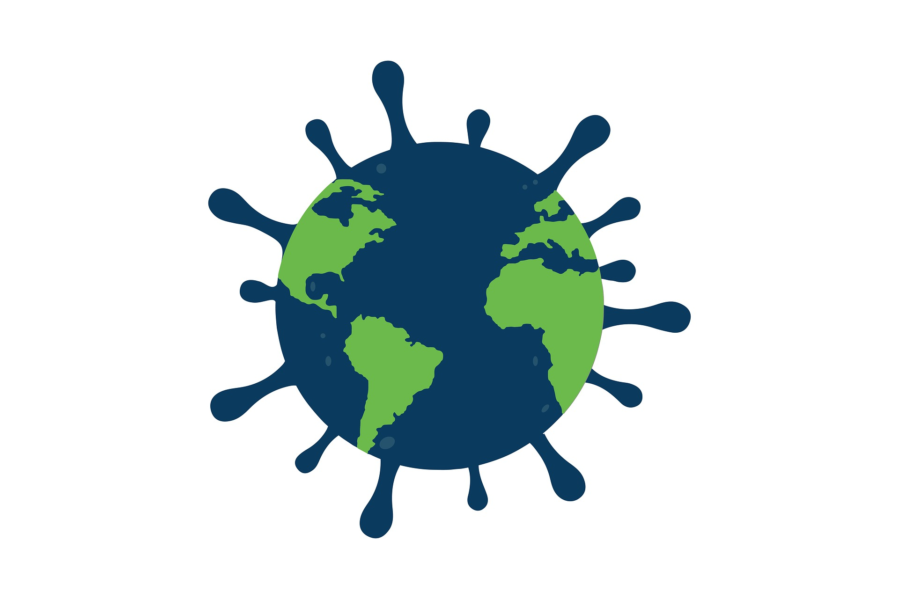
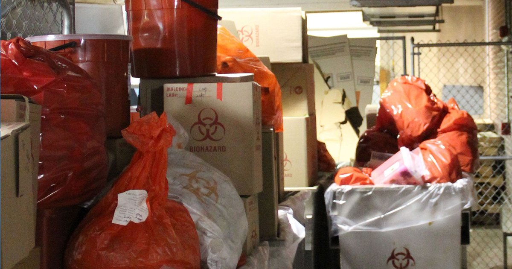
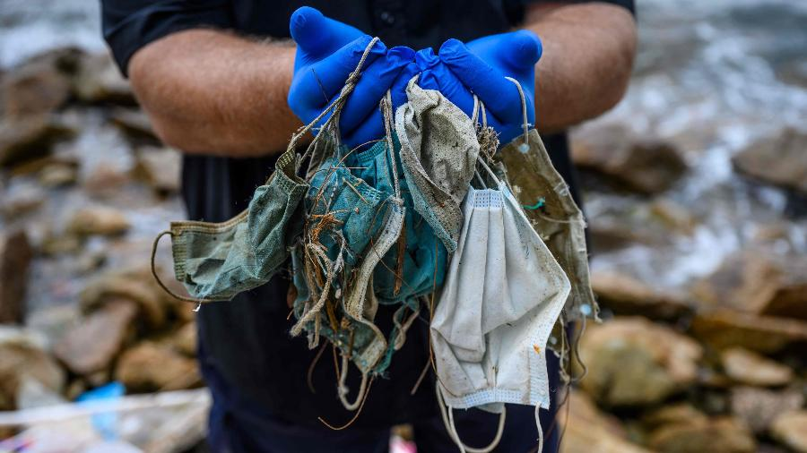
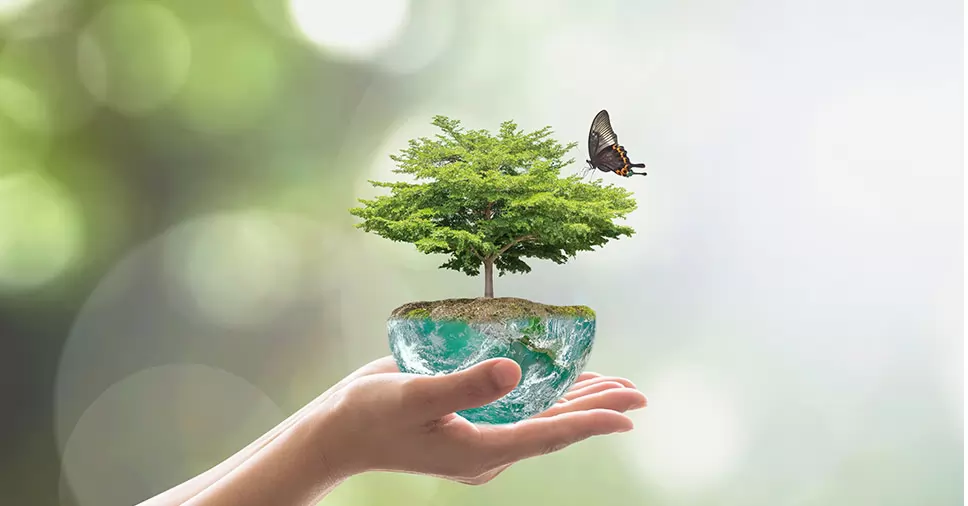
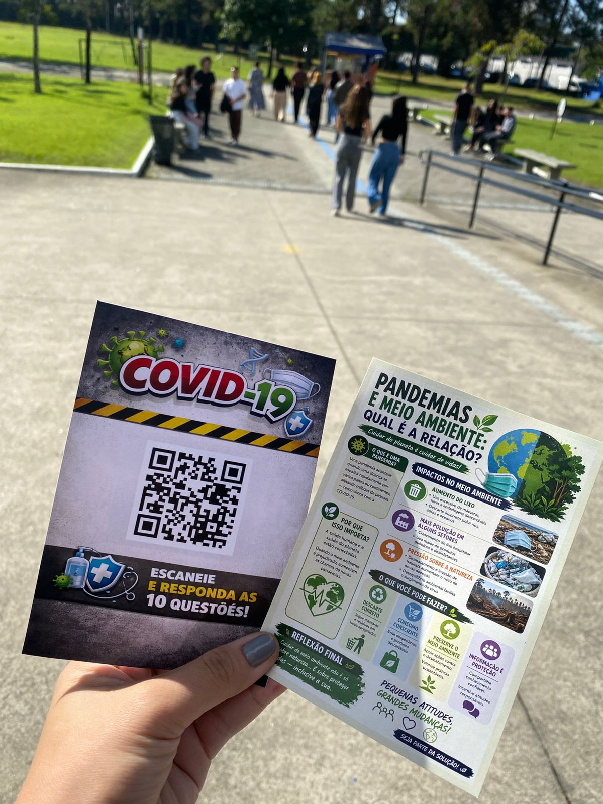
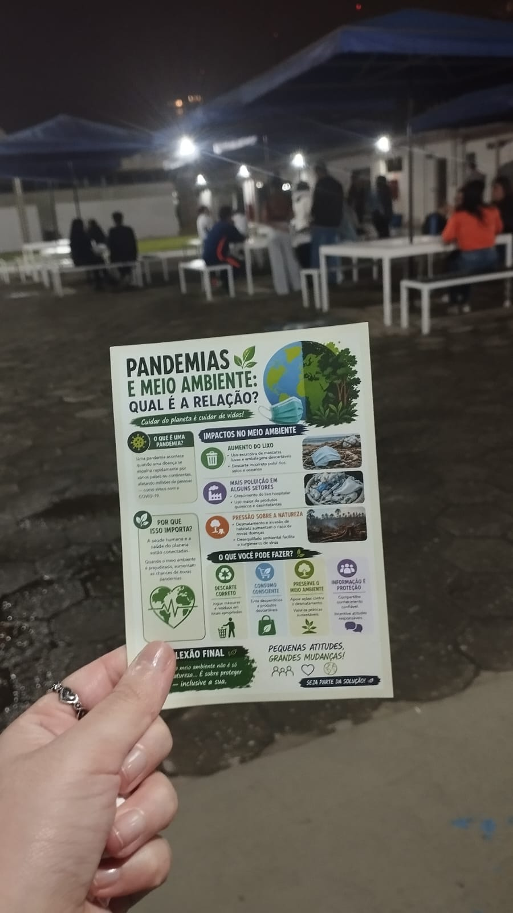

Entenda como a falta de consciência ambiental contribui para o surgimento de pandemias e impacta diretamente a saúde global
A relação entre pandemia e meio ambiente está diretamente ligada às ações humanas ao longo dos anos. O avanço do desmatamento, das queimadas, da urbanização desordenada e da exploração excessiva dos recursos naturais contribui para a destruição de habitats e aumenta o contato entre seres humanos e animais silvestres. Esse desequilíbrio ambiental facilita a transmissão de vírus e doenças que antes circulavam apenas entre animais.
Muitas pandemias e epidemias surgiram justamente a partir dessa aproximação causada pela interferência humana na natureza. A COVID-19 mostrou que os impactos ambientais vão além da degradação ambiental, atingindo também a saúde, a economia e o bem-estar social.
Dessa forma, compreender essa relação é fundamental para prevenir futuras crises sanitárias e incentivar uma convivência mais equilibrada entre sociedade e natureza.


Durante a pandemia, houve um aumento significativo no uso de máscaras, luvas, embalagens e outros materiais descartáveis, gerando uma quantidade muito maior de resíduos sólidos.

Muitos desses resíduos foram descartados incorretamente em ruas, rios e áreas públicas, contribuindo para a poluição do solo e da água.
O crescimento das compras online e do consumo durante o isolamento social aumentou significativamente a geração de lixo e embalagens.
Apesar de algumas melhorias temporárias observadas durante os períodos de isolamento, os impactos negativos causados pelo excesso de resíduos e pela falta de conscientização ambiental foram bastante relevantes. Esse cenário demonstrou a necessidade de ampliar a educação ambiental e incentivar práticas mais sustentáveis no cotidiano da população.

O meio ambiente desempenha um papel essencial na manutenção da vida e da saúde humana. A qualidade do ar, da água, dos alimentos e do clima depende diretamente da preservação ambiental.
Ecossistemas equilibrados ajudam no controle natural de doenças e contribuem para a estabilidade da vida no planeta. Quando há degradação ambiental, os riscos de problemas de saúde e crises sanitárias aumentam consideravelmente.
Além disso, cuidar do meio ambiente significa garantir qualidade de vida para as gerações atuais e futuras, promovendo mais equilíbrio, sustentabilidade e bem-estar coletivo.
A prevenção de futuras pandemias depende diretamente da forma como a sociedade se relaciona com o meio ambiente.
Além disso, fortalecer políticas públicas voltadas para a preservação ambiental e para a saúde pública é essencial para reduzir os riscos de novas crises sanitárias. Pequenas atitudes realizadas no cotidiano podem gerar impactos positivos significativos tanto para o meio ambiente quanto para a saúde coletiva.
A pandemia provocou mudanças significativas no comportamento das pessoas. Muitas passaram a valorizar mais a saúde, a higiene e a qualidade de vida.
No entanto, os dados obtidos no questionário mostram que parte desses hábitos não foi mantida após o período mais crítico da pandemia. Além disso, muitas pessoas ainda não percebem como suas atitudes impactam diretamente o meio ambiente e, consequentemente, a saúde global.
Esses resultados demonstram a necessidade de ampliar a conscientização ambiental e incentivar práticas mais sustentáveis dentro e fora do ambiente acadêmico.
Com base nos dados levantados durante o diagnóstico, foi desenvolvido um projeto de intervenção voltado para a conscientização da comunidade acadêmica da faculdade Braz Cubas.
A proposta busca informar os estudantes sobre a relação entre meio ambiente, saúde e o surgimento de pandemias, promovendo reflexão sobre os impactos das ações humanas no planeta.
Para isso, serão utilizados materiais informativos, como panfletos, banners e QR Codes que direcionam para este site, onde estarão disponíveis conteúdos educativos, imagens e informações complementares.
O objetivo principal da intervenção é incentivar mudanças de comportamento e ampliar o conhecimento sobre sustentabilidade, mostrando que pequenas atitudes podem contribuir para a preservação ambiental e para a prevenção de futuras crises sanitárias.

